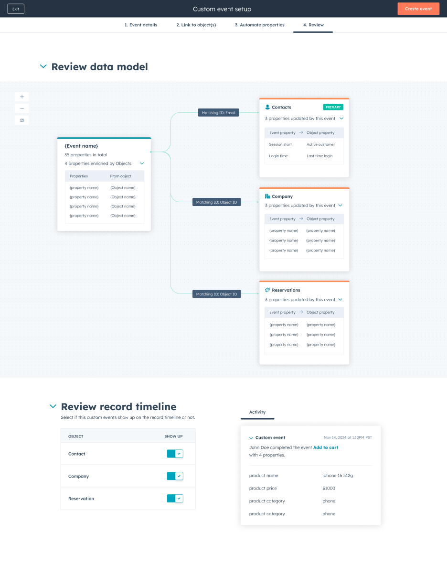
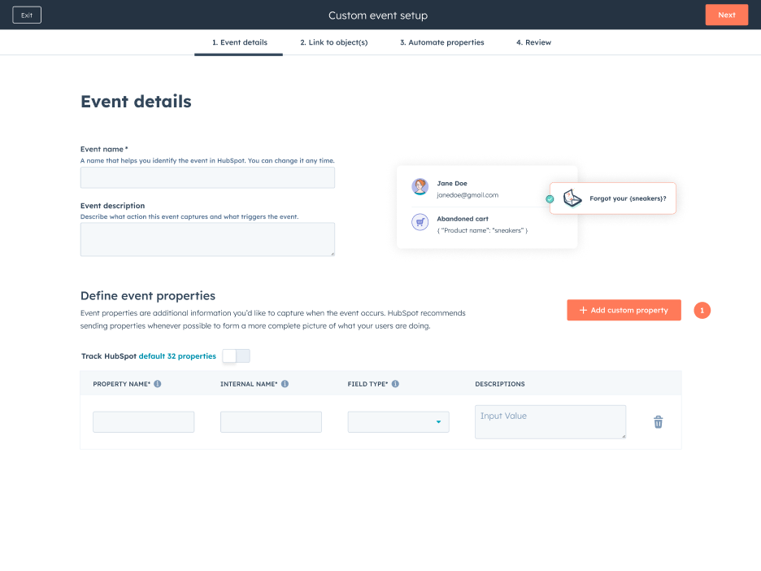
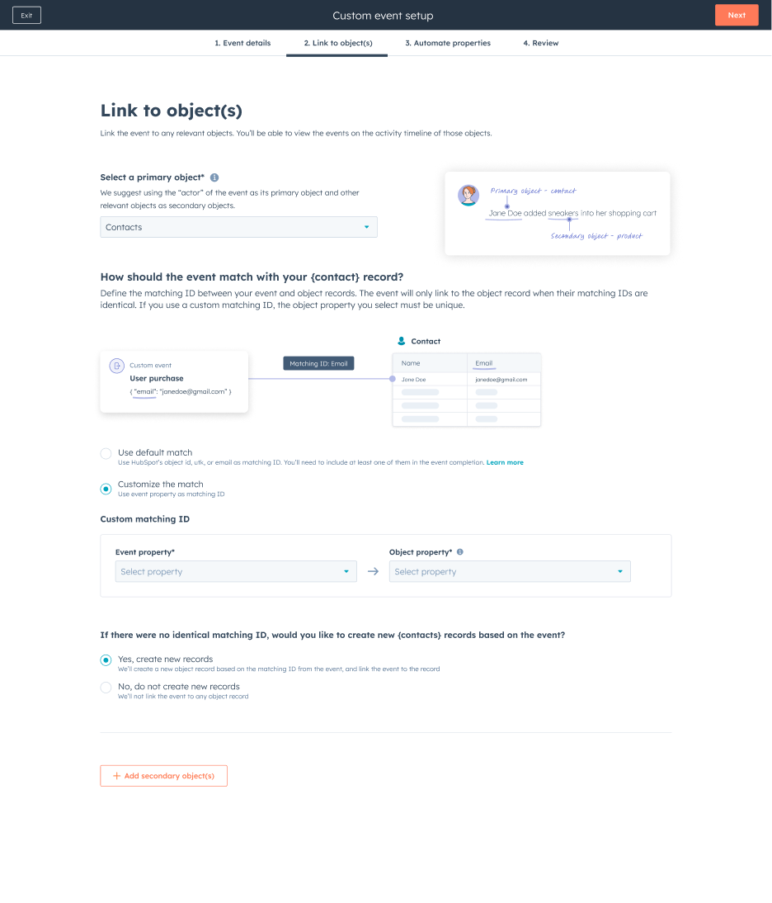
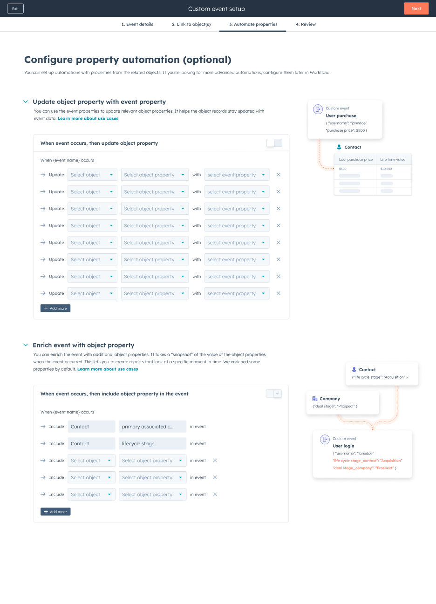

Events matched the wrong records
Customers’ systems used their own identifiers. A single primary record ID did not represent all the entities involved in an interaction.
HubSpot · Product design & research
Helping teams connect event data to the right CRM records with confidence.

Overview
A product signup, an application submitted, a subscription upgraded: these interactions can give marketing, sales, and service teams a timely reason to act. HubSpot’s custom events bring those signals into the CRM.
But sending an event was only the beginning. Customers needed to know which record it belonged to, what context it carried, and whether their setup actually worked.
I explored an end-to-end event setup experience and synthesized concept-testing findings into concrete design recommendations. The work covered event definitions, record matching, property automation, data-model review, testing, and timeline presentation.
The challenge was to make a technically complex system understandable to the people implementing events and useful to the teams acting on them.
01 · The challenge
The product brief identified testing, backfilling, and deletion infrastructure as the largest feedback category. Customers were experimenting with live data while trying to understand how events matched records and what their configuration changed.
Customers’ systems used their own identifiers. A single primary record ID did not represent all the entities involved in an interaction.
An event might need information from a contact, a company, or another object. Teams needed to capture the relevant context at the time of the event.
Updating records through workflows could be difficult to configure and hard to inspect. Less technical teammates depended on specialists.
The design question
02 · Listening before simplifying
In January 2025, we concept-tested the new end-to-end experience with nine participants across business systems, marketing, customer success, revenue operations, growth, and integration consulting. Their technical experience ranged from writing integration code to relying on colleagues to implement it.
The study explored the value of the proposed capabilities and how confidently participants could use them. Three findings shaped the direction.
The most requested capabilities were enriching events with object properties, customizing the record timeline, and linking events to multiple objects. Participants saw immediate possibilities when these tasks became available in the UI.
Custom identifiers were strongly validated. Backup matching IDs and advanced matching logic had little immediate demand; normalization was useful to some participants but was not essential.
Participants expected raw payloads, event properties, validation errors, and visibility into the record an event linked to. Sending an event without that feedback did not provide enough confidence.
03 · Turning findings into decisions
Less technical participants found “key” unfamiliar. I recommended “matching ID,” an explanatory illustration, and clearer wording for whether incoming events update existing records or can also create new ones.
Scope decision: remove backup keys and normalization options for now, and focus on the identifiers customers already use.
Some participants wanted direct control through manual entry. Others preferred sending a test event to discover available properties. Repeating definitions across events also created demand for CSV upload.
Design response: offer manual entry, test-event population, and file-based definition, while keeping event properties distinct from object properties.
Participants were split on configuring automation during setup or later. Some needed the advanced capabilities of Workflows; others preferred the simplicity of configuring it within Events.
Design response: make property automation skippable and available again in event settings.
04 · The experience
The design brings the critical decisions into one setup journey. Each step explains a different part of the relationship between an event and the CRM.
The entry point distinguishes the visualizer, JavaScript, API, webhook, object changes, and spreadsheet import. Participants could choose a setup type based on their use case and technical level.
Research also suggested moving case-study inspiration outside the setup flow so people could focus on completing the task.

Event implementers and consumers often define properties together. The experience supports different starting points rather than assuming every customer already has a complete schema.
The research recommendation was to give customers direct feedback about the expected format and validation errors, reducing the need to leave the flow for API documentation.

Customers can select a primary object and additional relevant objects, then choose the matching IDs that connect incoming data to CRM records.
Research validated Contact as a common primary object, Company as the most requested secondary object, and support for custom objects in more complex models. “Link to object” helps distinguish this relationship from object-to-object association.

Enrich an event with object properties or use incoming event data to update an object. Illustrations explain what moves in each direction.
Enrichment can preserve context at the moment an event occurs, supporting questions that current-state CRM data alone cannot answer. Customers can configure this during setup or return when they know what they need.

An event-centered diagram shows linked objects and property changes in one view. Participants across technical levels valued the ability to visually confirm the setup and spot missing configuration.
I recommended keeping this review in event setup and settings, and collaborating with the Data Model team on consistent components.
05 · Confidence comes from feedback
Sending test events was familiar to participants, but their expectations went beyond whether the request succeeded. They wanted to inspect the actual event, understand errors, and see its linked record.
06 · Making the data useful
Timeline customization was well received, particularly the prospect of events appearing on secondary objects. Customers wanted to control property order and improve how event information was presented to their teammates.
I recommended making event cards available on secondary-object timelines and supporting property reordering. Broader requests—such as subheaders and richer formatting—became input for the CRM events team’s longer-term direction.
07 · Outcome and reflection
Participants responded positively to the packaged setup experience and the value of no-code enrichment, multi-object linking, and clearer timeline presentation. The data-model review helped them understand and check what they had configured.
The findings also narrowed the work: prioritize custom IDs, simplify terminology, keep automation optional, and deepen the testing feedback.
The study flagged possible recruiting bias: only one participant was in marketing. Low demand for advanced identity resolution did not establish that marketers would never need it.
Success was framed around easier setup, greater adoption, and more value from custom and timeline events. The supplied materials document design and research validation, rather than a measured post-launch improvement.
The clearest path through a complex data product comes from making the relationships visible, giving people feedback at the moment they need it, and resisting advanced options that the evidence does not yet justify.